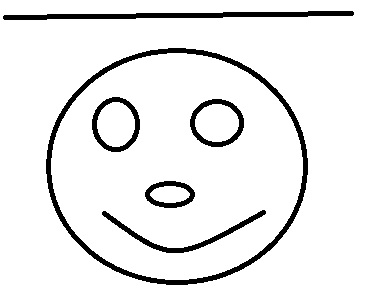

Strato Volcanoes comprise the largest percentage (~60%) of the Earth's individual volcanoes and most are characterized by eruptions of andesite and dacite - lavas that are cooler and more viscous than basalt. These more viscous lavas allow gas pressures to build up to high levels (they are effective "plugs" in the plumbing), therefore these volcanoes often suffer explosive eruptions.

Examples of strato volcanoes include Mt. St. Helens, Mt. Rainier, Pinatubo, Mt. Fuji, Merapi, Galeras, Cotopaxi, and super plenty others.This is a schematic diagram of a strato volcano, intended to illustrate the different layers of different materials that comprise them. The purple colors are meant to represent ash layers, either the products of fall-out from big eruption clouds or the products of pyroclastic flows. Notice that these ash layers tend to be thin but widespread.
Examples of strato volcanoes include Mt. St. Helens, Mt. Rainier, Pinatubo, Mt. Fuji, Merapi, Galeras, Cotopaxi, and super plenty others.This is a schematic diagram of a strato volcano, intended to illustrate the different layers of different materials that comprise them. The purple colors are meant to represent ash layers, either the products of fall-out from big eruption clouds or the products of pyroclastic flows. Notice that these ash layers tend to be thin but widespread.
The lava at strato volcanoes occasionally forms 'a'a, but more commonly it barely flows at all, preferring to pile up in the vent to form volcanic domes. Some strato volcanoes are just a collection of domes piled up on each other. Strato volcanoes are commonly found along subduction-related volcanic arcs, and the magma supply rates to strato volcanoes are lower. This is the cause of the cooler and differentiated magma compositions and the reason for the usually long repose periods between eruptions. Examples of strato volcanoes include Mt. St. Helens, Mt. Rainier, Pinatubo, Mt. Fuji, Merapi, Galeras, Cotopaxi, and super plenty others.